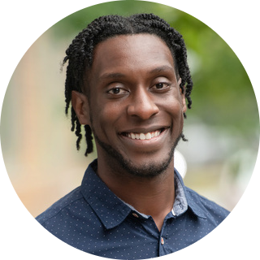

|  |
Brandon Kirkwood
Clinical Psychologist & Corporate Consultant
Brandon Kirkwood has spent the last 10 years engaged in training and
development, international public speaking, linguistic acquisition,
and
project management. He received a master’s degree from
Antioch University New England
and is currently completing his doctoral degree
in Clinical
Psychology. Brandon’s areas of clinical interest include anti-racism,
multiculturalism, identity development, mindfulness,
intersectionality,
and racial trauma.
As a certified life coach, Brandon provides personal development and
executive coaching. He leverages his training in clinical psychology
to
help organizations improve employee morale, intrinsic motivation, and
productivity.
As a learning and development consultant, he is a highly skilled
communicator and trainer, specializing in facilitating racial dialogue
and helping organizations create more equitable and inclusive workplaces.
He facilitates interactive trainings on topics such as diversity,
equity, inclusion, stress management, growth mindset, and anti-racism.
|